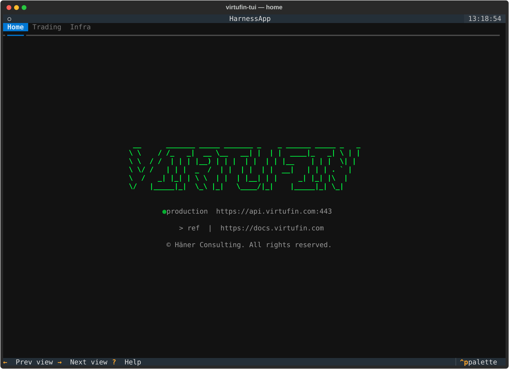
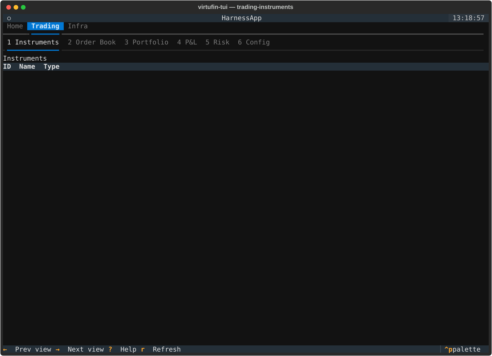
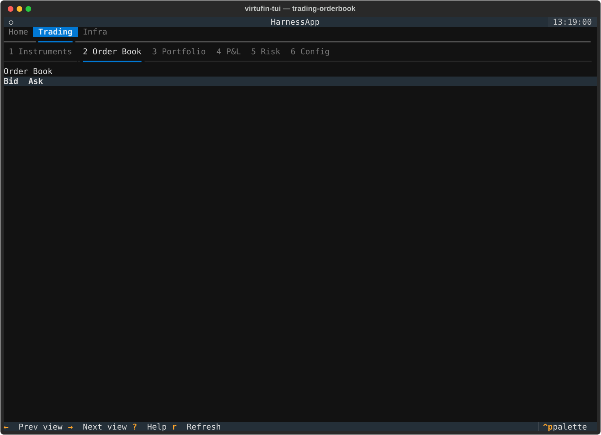
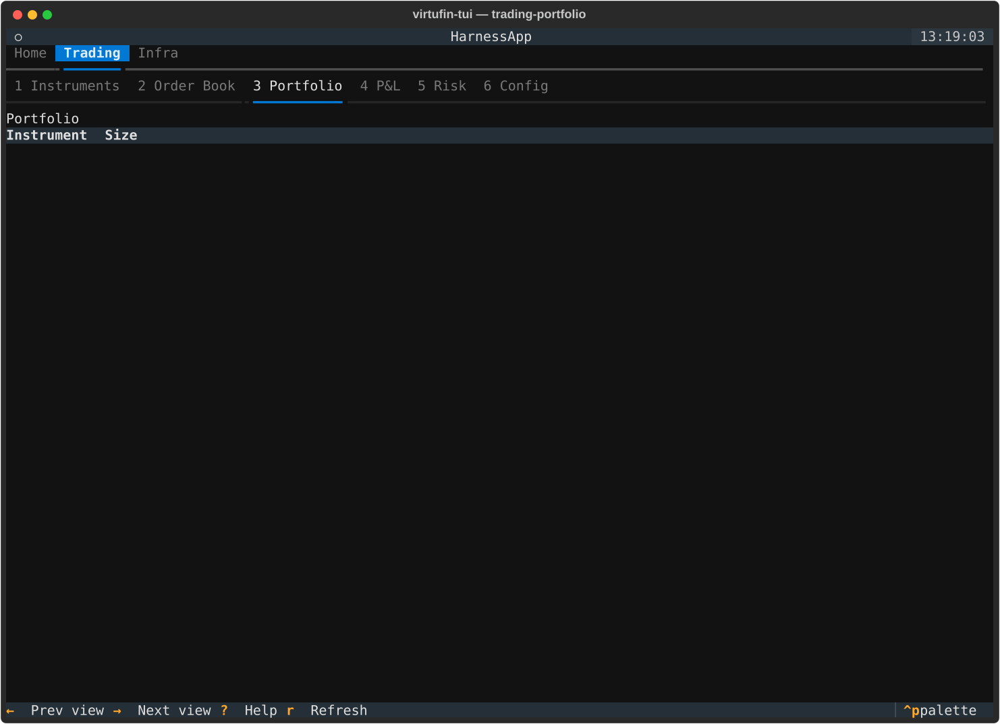
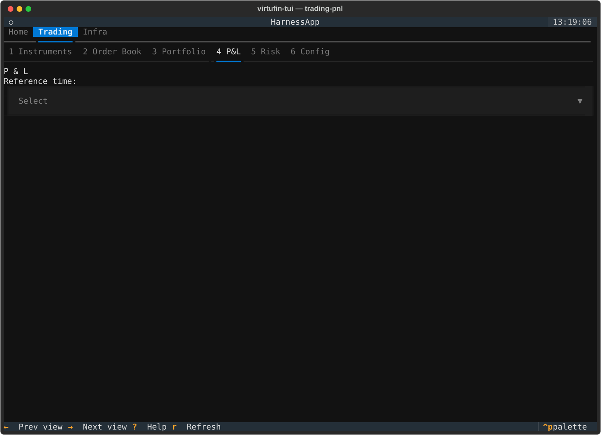
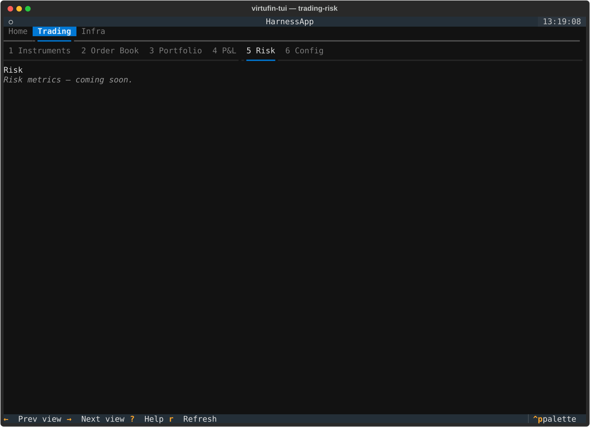
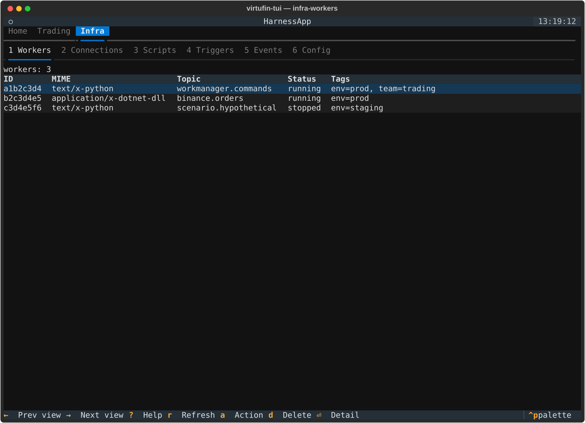
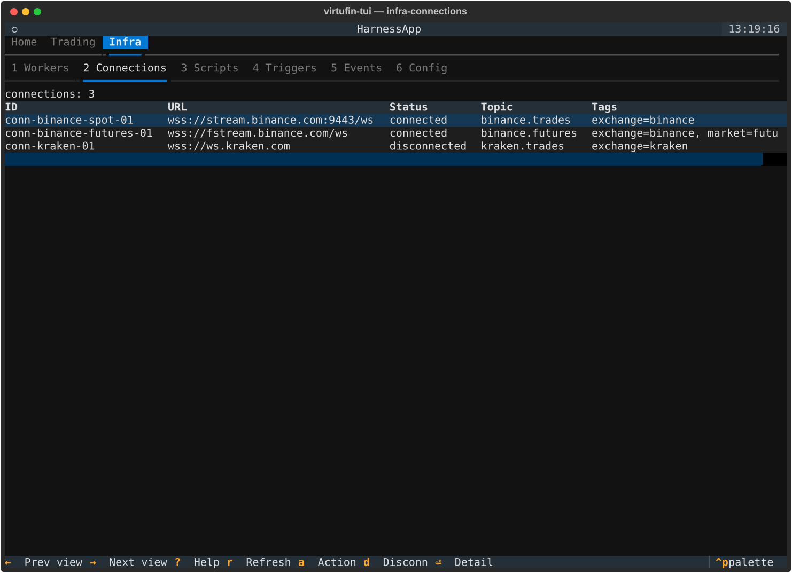
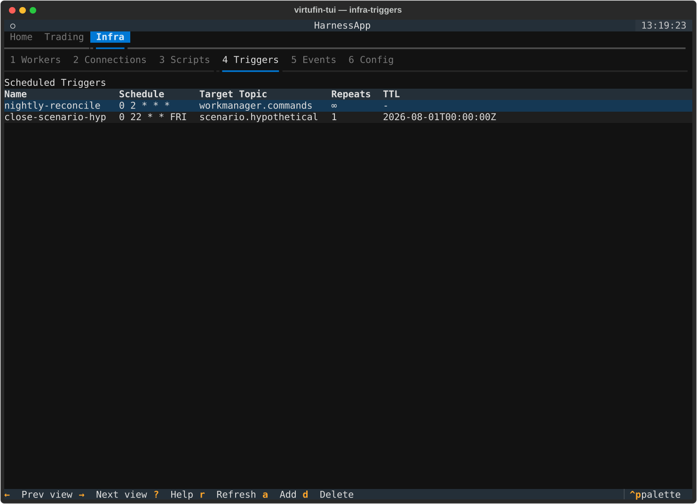
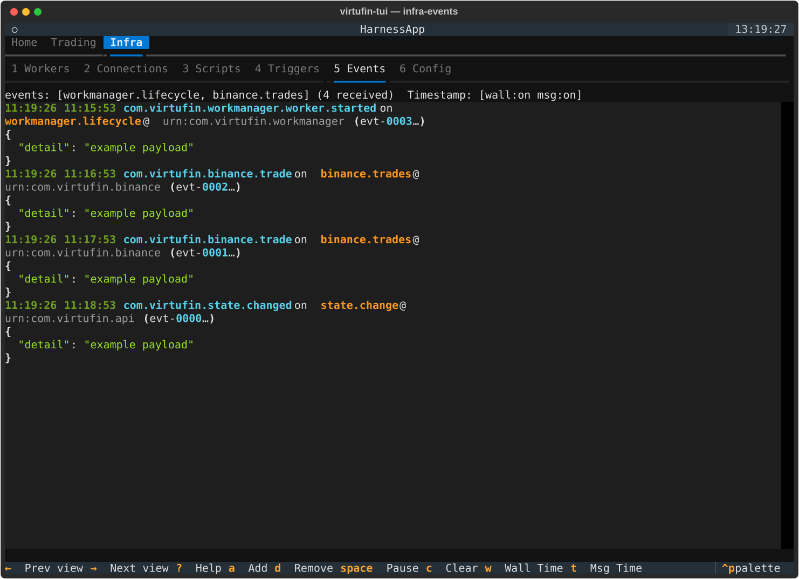

Keybindings¶
The default virtufin-tui keybindings. Press ? in the TUI for the same
table inline.
Global (App level)¶
| Key | Action |
|---|---|
? |
Show help overlay |
q |
Quit |
Dashboard navigation¶
| Key | Action |
|---|---|
right |
Next top-level tab (wraps) |
left |
Previous top-level tab (wraps) |
1-9 |
Switch to the Nth sub-tab of the active top-level tab |
The tab layout (which top-level tabs exist, and which panes are under
each) comes from pane_order in config.toml, not a fixed list -- see
custom-panes.md. The tables below assume the shipped
default layout (Home / Trading / Infra).
Beyond navigation, Dashboard forwards a small set of generic keys to
whichever action_* method the currently-mounted pane implements. A key
is hidden from the footer entirely if the current pane doesn't implement
the matching method.
| Key | Dispatches to (first match wins) |
|---|---|
r |
action_refresh / action_refresh_data / action_run_script |
a |
action_action / action_add_topic / action_schedule |
d |
action_delete_row / action_disconnect_row / action_delete_topics |
enter |
action_detail / action_switch_context |
space |
action_toggle_pause |
/ |
action_filter |
c |
action_clear |
s |
action_save_script |
n |
action_new_script |
w |
action_toggle_wallclock |
t |
action_toggle_msgtime |
Home¶
No pane-specific bindings.

Trading tab¶
Instruments, Order Book, Portfolio, P&L, and Risk are, as of
this writing, mostly placeholders (see architecture.md):
| Key | Action |
|---|---|
r |
Refresh |
The Config sub-tab under Trading is the same page documented under
Infra below.
 |
 |
 |
 |
 |
Infra tab¶
Workers¶
| Key | Action |
|---|---|
r |
Refresh |
Enter |
Open a read-only worker detail popover (Escape to dismiss) |
a |
Open the action modal: set/clear tag, set env var, start, stop, delete |
d |
Delete worker (with confirmation) |

Connections¶
| Key | Action |
|---|---|
r |
Refresh |
Enter |
Open a read-only connection detail popover (Escape to dismiss) |
a |
Open the action modal |
d |
Disconnect |

Scripts¶
| Key | Action |
|---|---|
↑ / ↓ |
Navigate the script list |
r |
Run the highlighted script (subprocess, isolated) |
s |
Save the edited script (user scripts only) |
n |
New user script (from a template, saved to ~/.config/virtufin/tui/examples/) |
e |
Toggle between the form (if the script has a paired .form.json) and the code editor |
f7 |
Select all in the editor |
Ctrl+C / Cmd+C |
Editor focused: copy selection (Textual native). Output log or script list focused: copy the entire output log to clipboard. |
Ctrl+V / Cmd+V |
Paste in the editor (Textual native, terminal bracketed paste) |
Ctrl+X / Cmd+X |
Cut selection in the editor (Textual native) |
Textual's binding chain checks the focused widget first, so
Ctrl+Con the editor copies a selection (nativeTextArea) and on the output log copies the full buffer (ScriptsPage's own binding).qis the global app-quit key --Ctrl+Cnever quits, it copies.
Scripts, and any custom pane built the same way, use
the same script+form convention: a .py file with an optional sibling
.form.json rendered via textual_jsonforms.

Triggers¶
| Key | Action |
|---|---|
r |
Refresh |
a |
Schedule a new trigger |
d |
Delete the highlighted trigger |

Events¶
| Key | Action |
|---|---|
space |
Pause / resume the live event stream |
c |
Clear the events buffer |
/ |
Filter events (substring match) |
a |
Add subscription topics |
d |
Remove subscription topics |
w |
Toggle the wallclock timestamp column |
t |
Toggle the message (CloudEvent time) timestamp column |

Config¶
| Key | Action |
|---|---|
Enter |
Switch to the highlighted context |
ctrl+up / ctrl+down |
Move the highlighted pane up/down within its tab |
delete |
Remove the highlighted pane from its tab |
i |
Insert the highlighted "available custom pane" after the highlighted row in "Tabs & Panes" |
x |
Add a brand-new top-level tab (prompts for id + label) |
See custom-panes.md for the pane_order schema, how
the "Tabs & Panes" section works, and how to write a custom pane. See
contexts.md for the contexts table above it.

Action modal¶
Opened via a from Workers or Connections.
| Key | Action |
|---|---|
Tab / Shift+Tab |
Move between fields |
Enter |
Submit |
Escape |
Cancel |
Ctrl+Z |
Undo (tag changes only, 2-second grace period after submit) |
Detail popovers / service browser¶
| Key | Action |
|---|---|
Escape |
Close (worker/connection detail popovers) or go back a level (service browser) |
Enter |
Drill into the highlighted item (service browser) |